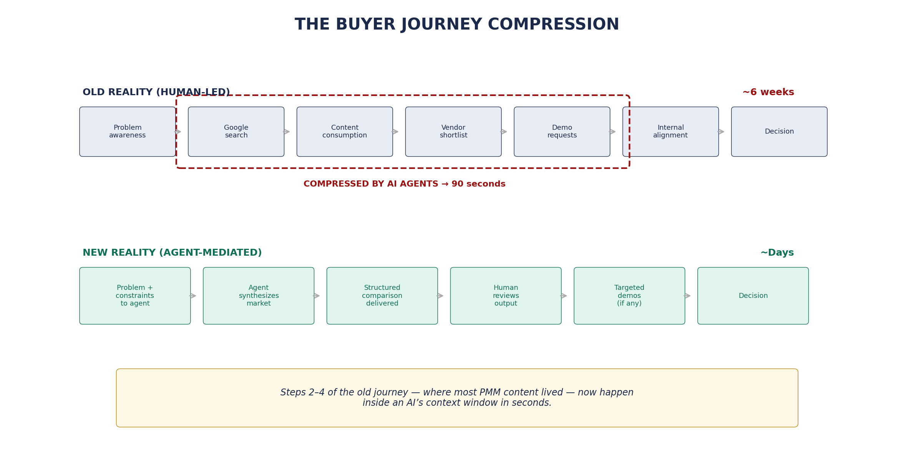
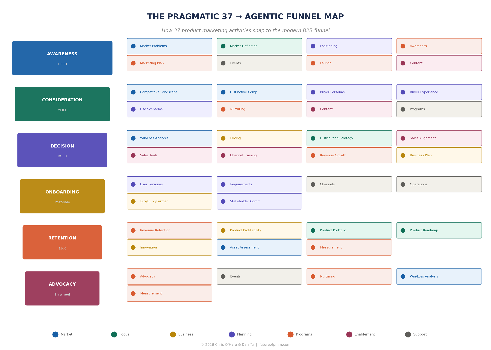

Core Thesis: The agentic era didn't accelerate the old B2B playbook — it ended it. Product lifecycles now run in continuous deployment, not quarterly releases. Buyers consume content through AI intermediaries, not your website. GEO has replaced SEO. The funnel is no longer a funnel. And the PMM who survives this transition is not the one who learned to prompt faster — it's the one who understood what changed and why.
The Story of Sarah
Sometime in late 2024, a product marketer we know—let's call her Sarah—noticed something strange in her pipeline data. Sarah ran product marketing for a mid-market analytics platform, the kind of company that sells to data teams at Fortune 2000 firms. She was good at her job. She'd built the positioning, trained the sales team, published the battlecards, ran the launches. Her funnel metrics had been steady for two years.
And then, over the course of about six weeks, three things happened simultaneously:
Observation 1
Traffic Up, Forms Down
More people visiting product pages, but fewer downloading white papers and requesting demos.
Observation 2
Prospects Knew Too Much
Showing up to discovery calls knowing competitive pricing, technical limitations, integration details.
Observation 3
Deals Closed in 3 Weeks
Typical cycle was 11 weeks. Two enterprise deals closed in under three.
The data was clean. What had actually changed: her buyers had started using AI agents to do the research, the comparison shopping, and the vendor pre-qualification that used to take human buying committees weeks of meetings, spreadsheets, and hallway conversations to accomplish.
Sarah's buyer had hired an intermediary that didn't care about brand affinity, didn't respond to emotional storytelling, and couldn't be schmoozed over a steak dinner. That intermediary was making decisions—or at least dramatically shaping the decisions—that determined whether Sarah's product made it to the shortlist.

The Three Eras of Enterprise Data
There is a company in Stuttgart that has been running SAP for thirty-one years. Their SAP Business Warehouse holds over two decades of transactional history. When we sat down with their CIO in late 2024, she said something that has stayed with us: "We have more data than any company in our industry. And we have less insight than a startup with a Snowflake account and two data engineers."
The history of how companies collect, organize, and activate data is not just a technology story—it's the story of what becomes possible when the architecture changes. We think of this history in three eras:
Era 1
Data Warehouse
Age of Reports. ETL batch jobs. Static deliverables. Quarterly reviews. The Pragmatic Framework was built for this cadence.
Era 2
Data Lake
Age of Unification. CDP era. Customer strategy. Journey mapping. Win/loss analysis. "A CDP knows your customer."
Era 3
Data Fabric
Age of Agents. Agentic AI. Federated metadata. Agents that monitor, adjust, generate. "An AMP knows your business."
A DMP knew your audience. A CDP knew your customer. An AMP knows your business. And now the buyer has an agent too.
The Visibility Gap
The visibility gap is the delta between what AI agents can access and process versus what remains invisible to them. Most B2B marketing assets—elaborate nurture sequences, gated content, personalized ABM campaigns—exist in the invisible zone.

From SEO to GEO
For twenty years, SEO has been the organizing discipline of digital marketing. SEO is not dying—traditional search still generates traffic—but it is being joined by Generative Engine Optimization (GEO).
SEO optimizes for ranking (appearing high on a list of blue links). GEO optimizes for citation (being included in a synthesized answer that an AI generates). In SEO, you compete for keywords. In GEO, you compete for entity authority.

Open Claude, ChatGPT, or Perplexity. Ask it to evaluate vendors in your product category for a common use case. See if your company appears. Read what it says about you. That sixty-second exercise will tell you more about your GEO readiness than any consultant's report.
The Pragmatic Framework Meets the Machine
If you've been through Pragmatic Institute training—and there's a decent chance you have, since they've certified over 250,000 professionals—you know the Framework. Thirty-seven boxes arranged in seven categories. What happens to each of those boxes when AI agents become part of the team?
The exercise produced three natural clusters:
Cluster 1
Automated
Market sizing, derivative content, event logistics, sales tools production. Agents do the majority today.
If your value is producing artifacts, the automation wave is not your friend.
Cluster 2
Augmented
Positioning, win/loss analysis, buyer personas, pricing strategy. Human essential, agent accelerates.
Operating without agents becomes a competitive disadvantage.
Cluster 3
Elevated
Stakeholder management, customer empathy, thought leadership. Irreducibly human.
These become MORE important because machines can't do them.
The Curriculum Architecture
This curriculum is organized around a remapping of all thirty-seven Pragmatic activities to the modern B2B funnel—from Awareness through Advocacy. Each subsequent chapter takes a stage of the funnel and anchors it to the specific Pragmatic boxes that drive it, reframed for the agentic era.

A PMM who automates 20 hours a week of Cluster One work and redirects that time into deeper competitive analysis, more thoughtful positioning, and genuine thought leadership will outperform one still manually updating battlecards—not by 20%, but by a factor that justifies the title of this curriculum.
What "10x yourself" actually means: Not working ten times harder or faster. Operating at a fundamentally different level of strategic impact because you've offloaded the mechanical work to machines built for it, and you're finally free to do the work that only a human can do.
The conversation about AI inside marketing departments is almost entirely wrong. It's focused on efficiency—how to produce the same outputs with fewer people. That's a CFO question.
The CMO question: how do we produce fundamentally different outputs? How do we shift from quarterly competitive reviews to continuous intelligence? From static messaging frameworks to dynamic positioning that adapts to what agents are surfacing in real time?
Key Takeaways
- The agentic shift is a structural transformation, not a toolkit upgrade
- Buyer behavior has already changed—AI agents compress research from weeks to hours
- Most PMM content is invisible to agents (the Visibility Gap)
- The Pragmatic 37 cluster into: Automated, Augmented, Elevated
- The PMM who frees Cluster One hours to invest in Cluster Three operates at a different level